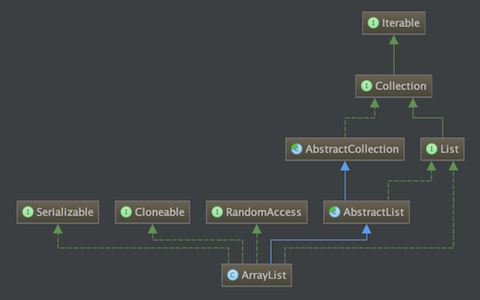

源码基于JDK1.7

成员变量
private static final int DEFAULT_CAPACITY: 默认容量, 值为10private transient Object[] elementData: 实际存储元素的数组private static final Object[] EMPTY_ELEMENTDATA = {};: 空数组, 默认使用该数组存储元素private int size: 保存的元素的个数, 并不是数组的长度, 加入移除元素, 该值需要减1, 而数组长度, 即lenght属性是不变的.private static final int MAX_ARRAY_SIZE = Integer.MAX_VALUE - 8: 数组最大长度, 按注释说的, 减8是因为某些虚拟机会保留部分header words, 超过Integer.MAX_VALUE - 8可能会导致OutOfMemoryError.构造函数
初始时使用的是空数组ArrayList()EMPTY_ELEMENTDATA, 但当添加元素时会对数组扩容, 扩容时使用默认容量DEFAULT_CAPACITY, 即10
1 | public ArrayList() { |
super()调用的是AbstractList的无参构造方法, 该方法体为空, 所以不用关心.this.elementData = EMPTY_ELEMENTDATA用于初始化元素存储的数组, 因为后续添加元素时调用的是Arrays.copyOf(T[] original, int newLength)方法, 所以数组不能为null.
ArrayList(int initialCapacity)
指定初始容量
1 | public ArrayList(int initialCapacity) { |
没什么特殊的, 创建一个长度为initialCapacity的Object数组用于存储数据.
ArrayList(Collection<? extends E> c)
基于已有的集合创建
1 | public ArrayList(Collection<? extends E> c) { |
注释部分的意思是c.toArray()返回的不一定是Object类型数组, 这是JDK的一个Bug, 这个问题StatckOverFlow上有讨论. 下面这段代码演示了这个问题:
1 | List<Object> l = new ArrayList<Object>(Arrays.asList("foo", "bar")); |
常用方法
add(E e)
1 | public boolean add(E e) { |
主要看看ensureCapacityInternal()方法, 该方法要做的是为数组扩容, 传入的参数是数组需要的最小长度, 如果数组当前长度小于该值, 则需要扩容.
1 | private void ensureCapacityInternal(int minCapacity) { |
该方法主要保证第一次向使用ArrayList()构造的list中存放元素时数组容量够用. 接下来就看看ensureExplicitCapacity()方法的实现:
1 | private void ensureExplicitCapacity(int minCapacity) { |
要注意的是modCount, 该属性是继承自AbstractList, 含义是当前list结构被更新次数, 主要用于防止迭代时list被修改, 文档在这里. 关于并发更新ArrayList, Vector等抛出ConcurrentModificationException异常的解释, 可以看看这篇博客.
接着如果数组容量不足, 则调用grow()扩容.
1 | private void grow(int minCapacity) { |
从4 ~ 6行代码中可以看出, jdk会先尝试扩容到1.5倍, 如果还是不够则直接扩容到minCapacity. 如果扩容后的容量超过最大容量会调用hugeCapacity()确定最终的容量, 该方法主要的代码是return (minCapacity > MAX_ARRAY_SIZE) ? Integer.MAX_VALUE : MAX_ARRAY_SIZE.
确定容量后就调用Arrays.copyOf()将数据拷贝到一个新的更大数组内, 数组的容量就是newCapacity. 该方法内调用的都是native方法来进行数组拷贝了.
add(int index, E element)
向指定位置插入数据
1 | public void add(int index, E element) { |
相比上面的方法多了两行代码, 其中rangeCheckForAdd(index)很简单, 就是保证待插入的位置合法, 实际的逻辑就一行index > size || index < 0, 如果true就抛出异常. System.arraycopy(elementData, index, elementData, index + 1, size - index)是将下标index之后的元素向后挪一位, 从而把index下标的位置让出来.
get(int index)
获取指定位置的元素
1 | public E get(int index) { |
rangeCheck()很简单, 如果index >= size就抛异常, 即获取的元素的下标不能超过保存的元素的个数. 接着elementData()返回数组指定下标的元素, 具体实现就一行return (E) elementData[index];.
remove(int index)
移除指定位置的元素
1 | public E remove(int index) { |
rangeCheck上面已经解释过了, modCount++增加了list结构更新的次数, 接着就是将index+1之后的数据以拷贝覆盖的方式前移一位, 最后将末尾数据清除. 当然如果size - index - 1 > 0, 即移除的是最后一位元素, 则直接将其赋值为null就行了. 最后返回被移除的元素.
remove(Object o)
移除指定元素
1 | public boolean remove(Object o) { |
没什么特殊的, 就是遍历数组, 调用fastRemove()移除元素. 该方法的实现与remove(int index)基本一致, 只去除了rangeCheck(index);, 不检查下标范围, 还有就是没有return.
迭代
调用iterator()获取迭代器, 方法内部返回一个Itr实例, 这是一个内部类, 完整实现:
1 | private class Itr implements Iterator<E> { |
先看看每个成员变量的含义:
cursor: 游标, 指向当前元素的下标lastRet: 最后返回的元素的下标expectedModCount: 保存期望的modCount, 防止并发修改
next()用于获取元素, 并将游标向后移动一位.remove()用于移除当前元素, 之后设置游标cursor为当前移除的元素的下标, 其实就是前移了一位. 将lastRet置为-1, 还要更新expectedModCount为新的modCount, 防止抛出ConcurrentModificationException.ArrayList.this.elementData中的this用于在内部类访问外部类的实例. StatckOverFlow上有相关的讨论.
如果迭代时移除下标小于cursor的元素, 则被移除元素之后的所有元素都向前挪了一位, 这样等于把cursor向后跳过一位, 造成一个数据没被读取被直接跳过.
总结
ArrayList使用数组保存元素, 所以get(int index), 即随机访问的速度很快, 但是插入, 移除元素时需要搬迁移动数组内的元素, 所以性能较差.